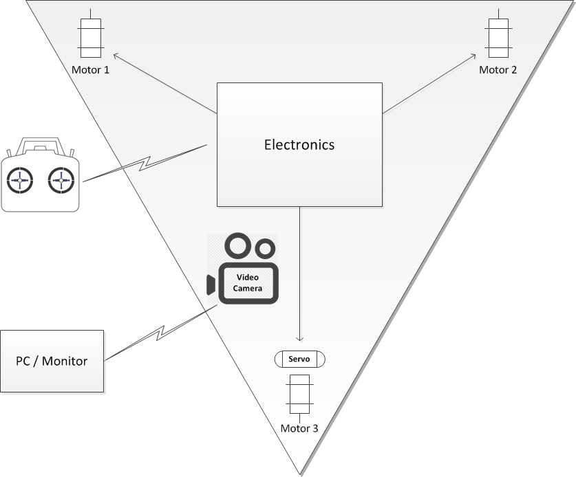
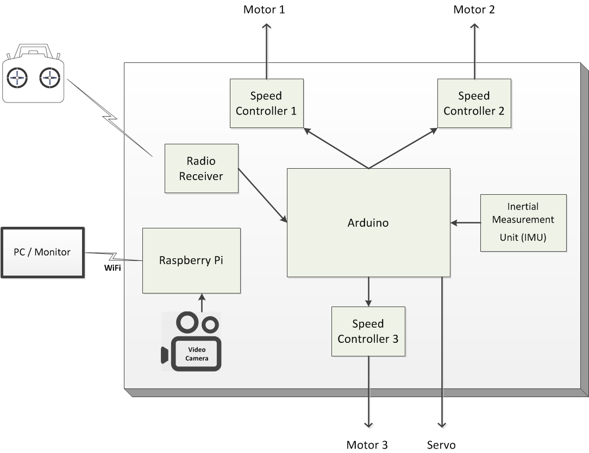

Tricopter with custom Arduino-based software navigation controller
Just for fun (10th grade)
Tags:
tricopter
multi-rotor control
Arduino
Raspberry Pi
Java
inertial measurement unit (IMU)
servos
PWM
networking
video
The tricopter hovering in a test flight.
Top-level Architecture
As a tricopter, it's a triangular frame with a motor and propeller on each corner.
The rear motor is attached to a servo which angles it for steering.
Control electronics receive signals from an RC transmitter and determine speed and steering settings for
the motors and servo. An on-board camera sends video via wifi.

Test Flight
Control Architecture
The control electronics is essentially model airplane control electronics with an
Arduino
inserted in the middle to manage speed and steering. Custom software on the on-board
Arduino controls the 3 motors
along with the servo
angling the rear motor. A video camera sends back video through an on-board Raspberry Pi in a separate system.

The radio receiver
receives signals from the transmitter and outputs PWM signals to the Arduino.
The Arduino performs navigation calculations and outputs PWM control signals to the
speed controllers
and servo.
Note that on model airplanes the radio receiver connects directly to the speed controllers, communicating via PWM;
here the Arduino is interposed in the middle but uses the same interfaces and so is transparent to the other devices
although it's controlling them.
An on-board video camera streams back video through a Raspberry Pi.
The Pi has a USB wifi antenna attached.
Design approaches and tradeoffs
1. Tricopter vs Quadcopter
The initial decision was how many rotors to have. Quadcopters are most common, but I chose to do a tricopter.
My expectation was that the control software would be simpler than for a quadcopter.
As it turns out, it was a little simpler, but less than I thought because the hard part is stabilization
and that's pretty much the same.
Also a tricopter has fewer motors, but the mechanics are more complicated since one motor has to
swivel to steer it; with a quadcopter you just adjust the speed of the motors to steer.
In the end, if you're going to design and build one, I would recommend a quadcopter rather than a tricopter.
They are simpler and more common, which equates to a larger community of people talking about them and
sharing design experience.
2. Orientation Sensors
By far the hardest design challenge is how to determine the frame's orientation.
Unlike a model airplane where the human operator acts as the control system, directly controlling
the motor speeds and control surfaces through the handheld transmitter, in a multi-rotor copter it's
too complicated and there needs to be on-board control software. But to operate, that control software
needs to know the real-time orientation of the frame - in short, which way is down relative to the plane of the frame.
I started off using an accelerometer, which measures acceleration in all 3 dimensions.
They're very cheap and easy to interface with. Since gravity is read as a continuous acceleration
(yes it reports gravity as a ~10 newton downward acceleration) it could be used to determine "down".
But it proved difficult to work with since it picked up vibrations from the motors thru the chassis too easily.
Basically there was too much noise in the measurements due to the vibrations.
While the noise probably could be removed with a low-pass filter, I didn't get to that.
Couldn't they be averaged out? In theory yes, but it wasn't responsive enough - there was too much lag,
wasn't that accurate, and the vibration-induced noise didn't seem to be entirely random.
So then I went to an Inertial Measurement Unit (IMU), which is a more sophisticated device that
combines an accelerometer, gyro, and magnometer. It integrates all those into a single output providing orientation.
Stand-alone tests are working very well. Getting readable data from this was a challenge - it outputs either
(a) ascii output or (b) an non-delimited stream of non-stop floats. You don't know how long ascii numbers are.
But it turns out there's a standard Arduino "text finder" library which is very similar to the java scanner class,
and works great for this. You tell it to find a character in the stream and then it lets you read data types
from there (floats are represented in ascii).
Even with IMU vibrations might be a problem, so I mounted them on vibration dampeners.
These dampeners are designed for avionics and cameras mounted on UAVs.
Their orientation is a bit of a compromise. The vibrations are primarily side-to-side due to the
motor armature rotation but these dampeners are designed to dampen vertical (compressive) vibrations,
not horizontal (shear) vibrations. So optimally they'd be mounted horizontally,
but they also need to support the weight of the electronics platform and they won't support weight that way,
so I printed out pieces to incorporate them at 45 degree angles. In a weightless environment,
they'd be perfect horizontally.
3. The video stream
Getting the video stream is actually pretty easy. I put a combination of a Raspberry Pi and a
RPI camera on-board.
The camera is manufactured by the pi foundation and interfaces quite easily.
A USB antenna provides wifi connectivity and connects to an ad-hoc network created by the laptop.
The main drawback to this approach is that the solution is finicky, and if signal is lost it cannot be
regained without direct interaction. In this way it is inferior to the more standard analog systems which
do not require handshaking and therefore automatically regain signal when it is available. With the current
system losing the video stream would be disastrous without a line of sight.
4. Power supply
Power is provided by on-board 11v 1.5ah lithium-polymer battery. That's fed into the speed controllers and they provide a 5 volt output that's used to power the Arduino and the receiver. The servo requires 7 volts so that has a separate regulator connected to the battery. The Pi also requires 5 volts but the 5v speed controller output isn't strong enough for it, so it has its own regulator connected to the battery. You might think using a regulator, which drops the voltage via resistance and therefore consumes power, as wasteful, but it's all dwarfed by the motors' power consumption, and more efficient sources are typically heavier.
5. Lift power
The particular combination of
motors and
propellers
turns out to make the rig highly overpowered. While this will be nice once it starts working, it is sub-optimal during testing. It's gone in the blink of an eye. In fact in tethered testing, one motor mount snapped off when the tether stopped it about a foot off the ground - the motor was providing that much force!
6. Frame composition
Originally I used 3D-printed frame which was nice due to the customizability of it, but was very fragile and broke during testing. I then built a frame using wooden dowels for the support and a few 3d printed parts. While this has worked well during testing, I might move to a fully wooden frame later. While 3d printers are a great tool, they are not suited to situations where materials are pushed to the extremes in terms of strength and weight. If my printer could print ABS as well as PLA I might think re-evaluate my choice, but Ultimakers don't have heated beds.